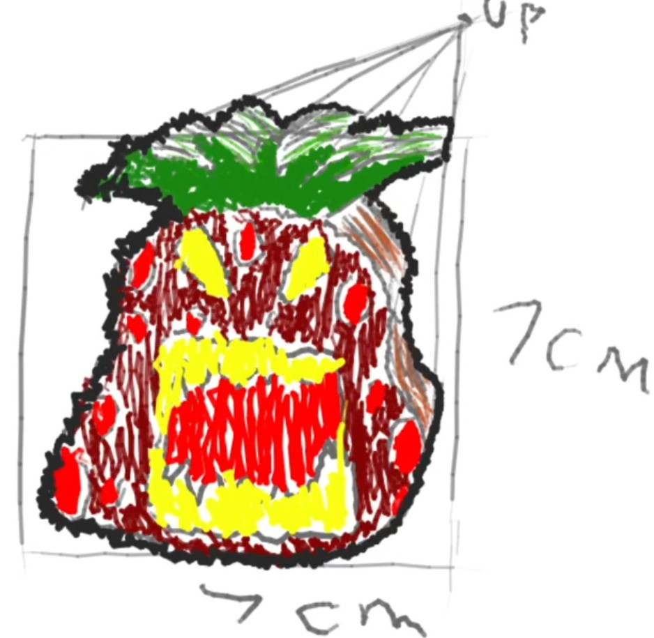

Pineapple Strawberry Pencil Topper
Target User Profile
Age: 20-25 years
Gender: Any
Hobbies: Scrolling TikTok, Sharing memes
Interests: PPAP, Funny Memes
Lifestyle: College student, Partying
Culture: Gen Z
Possible Visual Elements Improvements
Color Palette: More tropical red with brighter yellow accents
Shape: More hybrid pineapple-strawberry fusion
Texture: More spiky crown with smoother body
Style: More meme-inspired surrealism
Details: More sunglasses and party hat
Finish: More glossy with more UV reactive elements